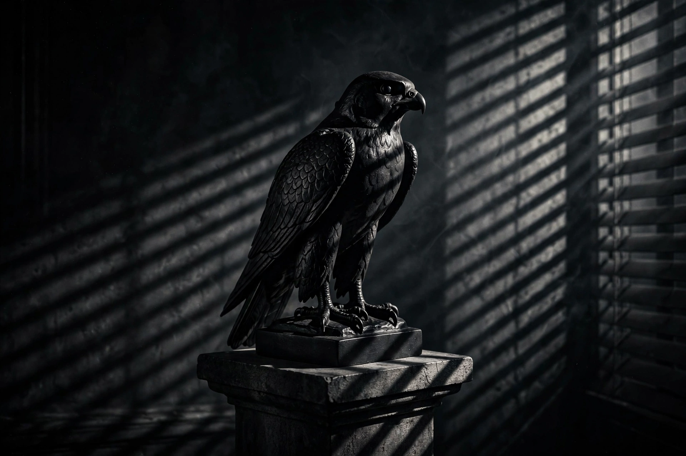

| The Maltese Falcon | |
|---|---|
 The Maltese Falcon statuette | |
| Author | Dashiell Hammett |
| Published | 1930 (Alfred A. Knopf); serialised in Black Mask from 1929 |
| Genre | Hardboiled detective fiction |
| Protagonist | Sam Spade |
The Maltese Falcon is a 1930 detective novel by American writer Dashiell Hammett, originally serialised in the magazine Black Mask beginning with the September 1929 issue. The story is told in a spare, objective style about San Francisco private detective Sam Spade, who becomes entangled with a trio of unscrupulous adventurers — Brigid O'Shaughnessy, Joel Cairo and Casper Gutman — competing to obtain a jewel-encrusted statuette of a falcon, the legendary tribute of the Knights of Malta to Charles V. The novel is a landmark of hardboiled fiction, and its dialogue-driven objectivity strongly influenced writers such as James M. Cain.
The novel has been filmed three times, most famously as The Maltese Falcon (1941), John Huston's directorial debut starring Humphrey Bogart as Spade, Mary Astor, Peter Lorre and Sydney Greenstreet. The 1941 film is widely considered the first major film noir and one of the greatest films ever made. It helped define the visual and thematic conventions of film noir: the morally ambiguous detective, the femme fatale, and a prize that proves worthless — "the stuff that dreams are made of," in the film's famous final line adapted from Shakespeare.
The American Library Association and Modern Library lists rank the novel among the greatest English-language novels of the 20th century. The lead falcon props from the 1941 film are among the most valuable film memorabilia ever sold at auction.